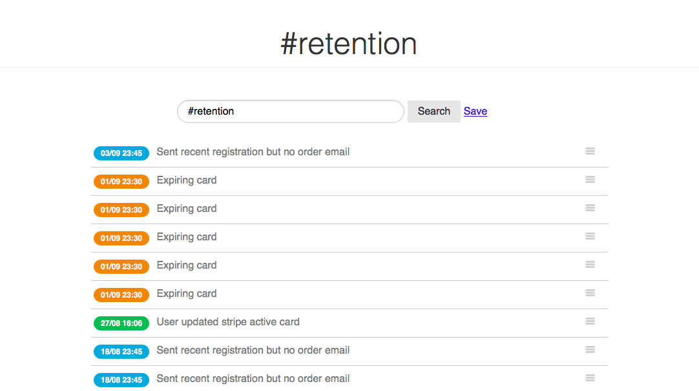

Client retention for SaaS applications
Here is how we are using our own food to keep track of users activity and analyze retention. Logcamp is a global notification system to plug into your applications. It lets you send, sort, search and organize any kind of events and of course receive notifications when certain actions occur.
Since we deal with clients in our e-commerce applications it is important to monitor what's going on and react quickly. Hence, we set up triggers for different events such as:
- New customer joined
- Customer unsubscribed
- Customer updated
- Credit card on file is about to expire
- Customer updated billing information
- New order
- Customer contacted support
- …
As you can see events are customer-centric and e-commerce oriented. However, you can send anything (played song, unlocked level 10…).
Most of these events fit within our 'retention pipeline' and follow logical steps. For example, when running a subscription-based business you hope that no credit card will be declined. Truth is that it happens every month. So the happy path to fight this is something like that:
- Detect expiring cards
- Email customer with expiring card
- Customer takes the time to update billing information
- System successfully charges credit card; no interruption of service for customer
- Celebrate
The effort to put such process in place is relatively low therefore: A) You should do it B) It should run without assistance
Logcamp helps us track 'billing information updated' events. We tag these events under 'retention', which helps search and dig dipper. Same goes with abandoned cart.
